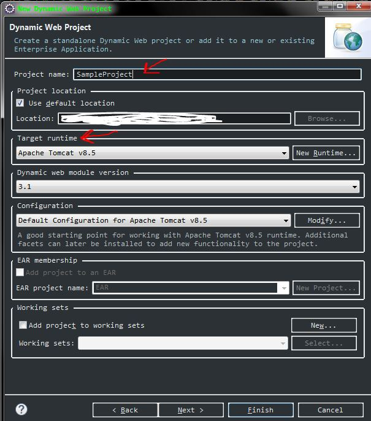
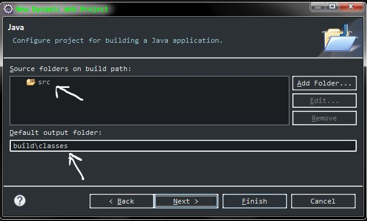
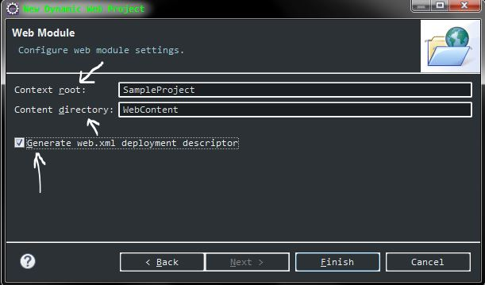

Every website that you access is going to be accessed from the web browser (web client). And this web client is going to make a request to the web server. Then the web server is going to create a response and give it back to the web client.
------------ Request -----------
| | -----------------------------> | |
| Web Client | | Server |
| | <----------------------------- | |
------------ Response | |
-----------
This request & responses are going to be made with the http protocol.
It is a server side programming option to generate dynamic web content. A servlet creates a new thread for every request.
Configure a dynamic web project in Eclipse IDE.
New -> Dynamic Web Project
The "target run time" is the server that the project is going to be hosted on.
The src folder contains all your .java files. And when they are compiled they are going to be placed under the folder "build/classes"
The "Context root" is the name of your project. It is always the root folder of your application. The "Content directory" is the web content, which basically contains all the HTML, CSS, Javascript files and even the XML files.
We can configurate the project using annotations but in this example we are going to use XML configuration this is why we select the option "Generate web.xml deployment descriptor"
Now we have the basic structure:
|-- src
|- WebContent |-- META-INF
|-- WEB-INF |-- lib
|-- web.xml
Let's create two folders under the "WebContent" folder. One for all the HTML files and another for the CSS's.
This is overall how our web application project structure looks like.

Now we have to set up an instance of Apache Tomcat Server, because we need to host this application in a server. For that we have to download the Tomcat Server and extract it into a folder. The path of this folder is calle Tomcat home.

We can create a new server from the "servers view".

Or we can create the server with the following steps:

After clicking in create server it will show you all the possible options:

If the server that we choose is never being use before then eclipse doesn't know the Tomcat home for this server, so we will have to enter the Tomcat home:

If the server that we are going to use has being used previously for other projects, so eclipse knows the "Tomcat home" for this server then we will see the following screen:
Now you have to choose which project will be hosted in our server.

Now we can see how our server instance is ready: